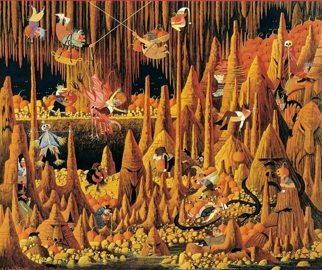
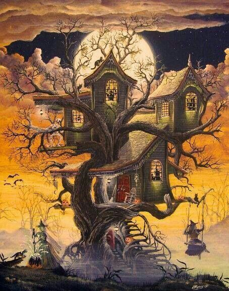
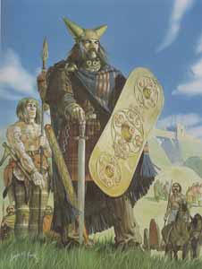

Halloween starts in the oldest celtic towns, not for "party" but for spiritual purification.
At the end of October celtic tribes celebrated a Final Summer pagan "ritual". They
belived that the spirits of the dead ones were with humans and they felt so scary about.
How they repealed the dead ones? Sacrificing human and animal bodies to scare away the spectres.
Another way to repeal the spectres was wear costumes with heads, skins and another
parts of animals to expulse them away and enjoy peace and tranquility the next day.
In the past century when the Irish people went to USA bring his habits like this festivity
ant slowly started to become the big party what whe know today .
|  |  |  |